Este santuario está disponible desde que llegas a la región de la torre de Akkala. Lo puedes encontrar junto a la Posta de Akkala sur.
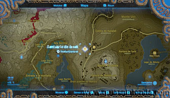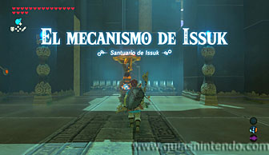
Lo primero que debes hacer es usar el mecanismo para controlar una plataforma por medio del sensor de movimiento del mando. Tienes que dejar los pinchos a los lados para poder pasar, da igual la configuración que logres, mientras puedas pasar será válida.
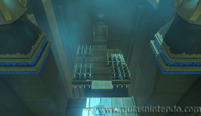
En la siguiente sala verás un interruptor y unos rayos que te impiden avanzar. Al golpear el interruptor unos bloques se mueven cortando el paso de los rayos durante unos segundos. Aprovecha para pasar corriendo sin ser dañado.
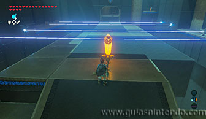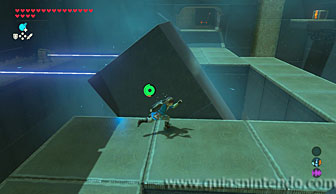
Si no te da tiempo y te quedas en mitad del recorrido, siempre puedes volver a golpear el interruptor con una flecha o bomba para activarlo de nuevo.
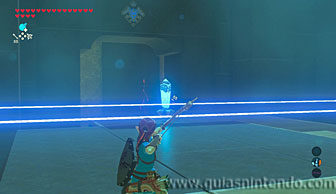
Al final de la sala puedes coger un cofre antes de continuar, para ello tienes que golpear el interruptor y saltar hacia el último bloque que se mueve circularmente. Una vez en él tienes que caminar para ponerte sobre él sin caerte.
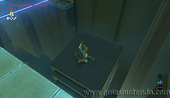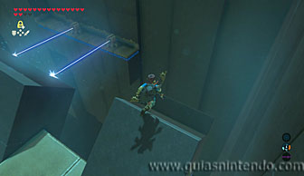
Así quedarás sobre el bloque cuando se pare y estarás en posición de planear hacia el cofre (contiene una Lanza de las aguas).
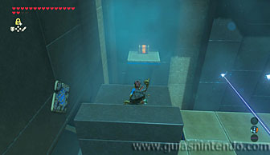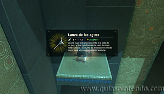
Sigue avanzando y llegarás a otro mecanismo que mueve una plataforma con el sensor de movimiento del mando. El objetivo ahora es colocar las tres esferas dentro de las 3 ranuras. Si mueves el mando lentamente no te resultará muy complicado conseguirlo. Al lograrlo se abrirá el camino hacia el altar.
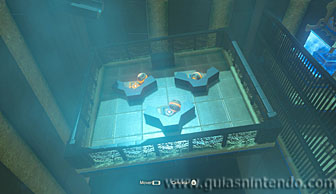
Ahora dirígete al altar para conseguir el símbolo de valía correspondiente.
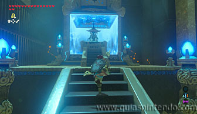